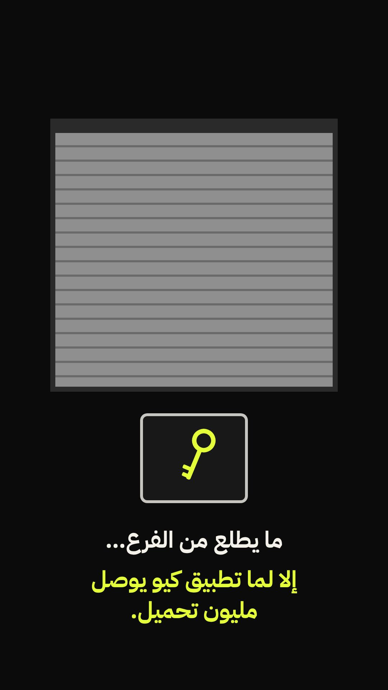
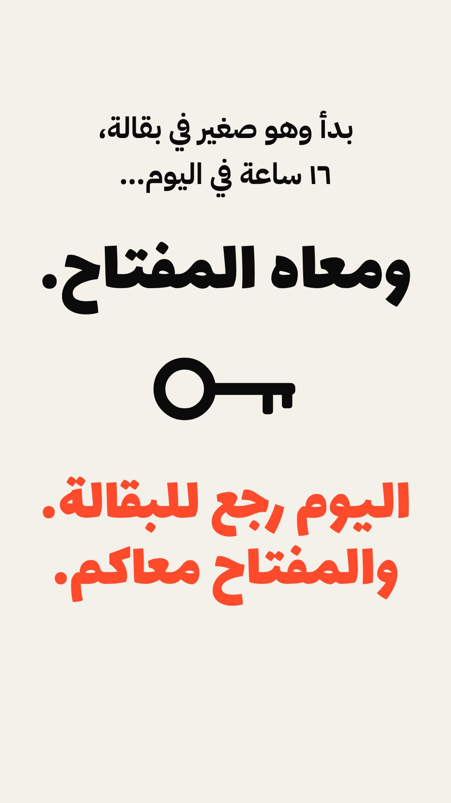
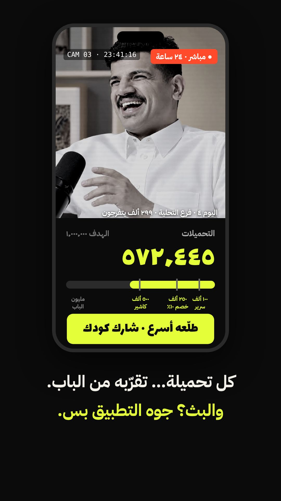
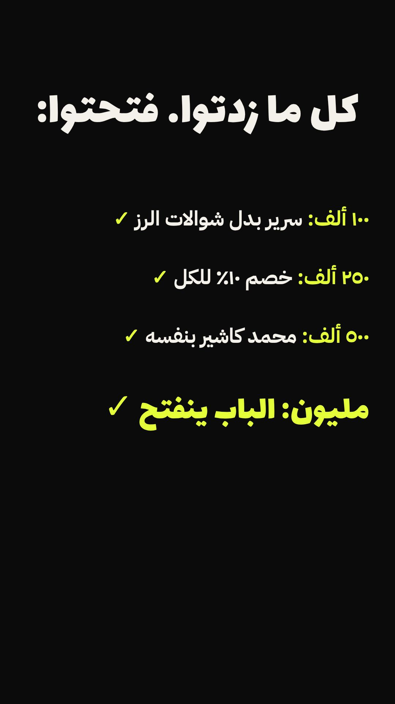
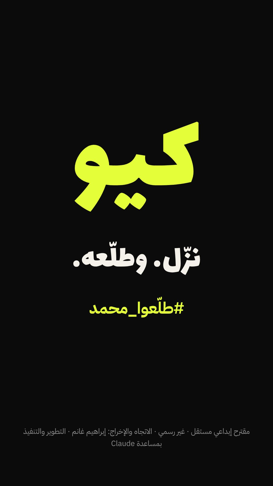
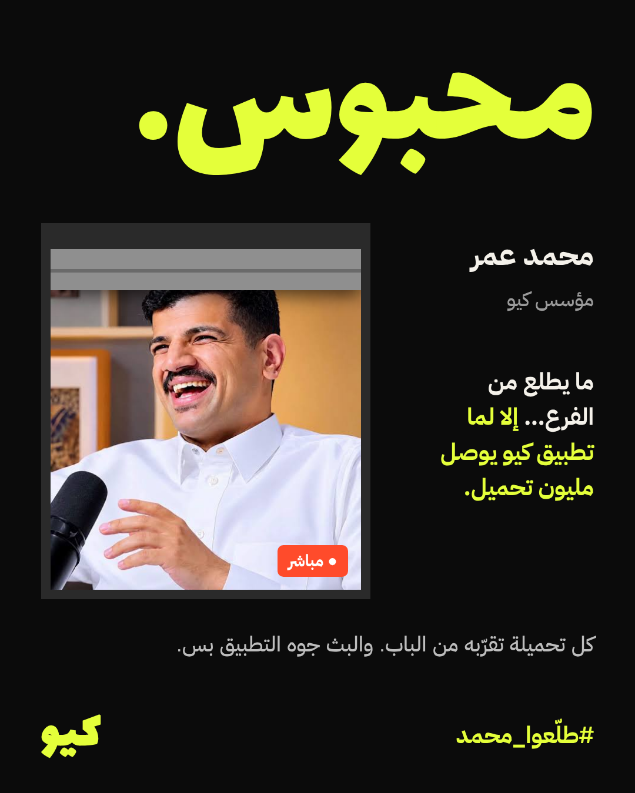
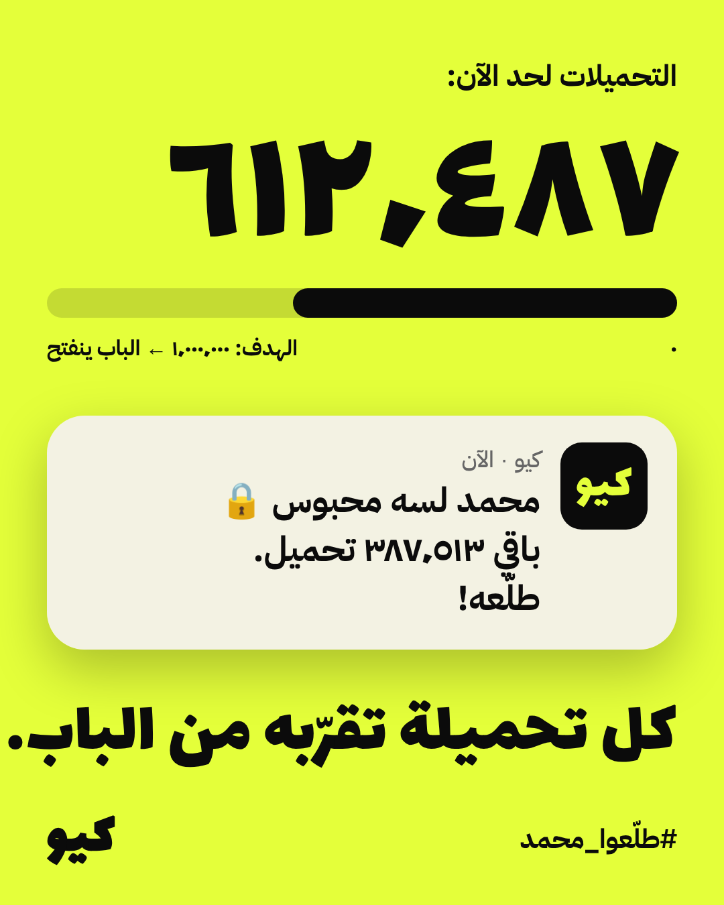
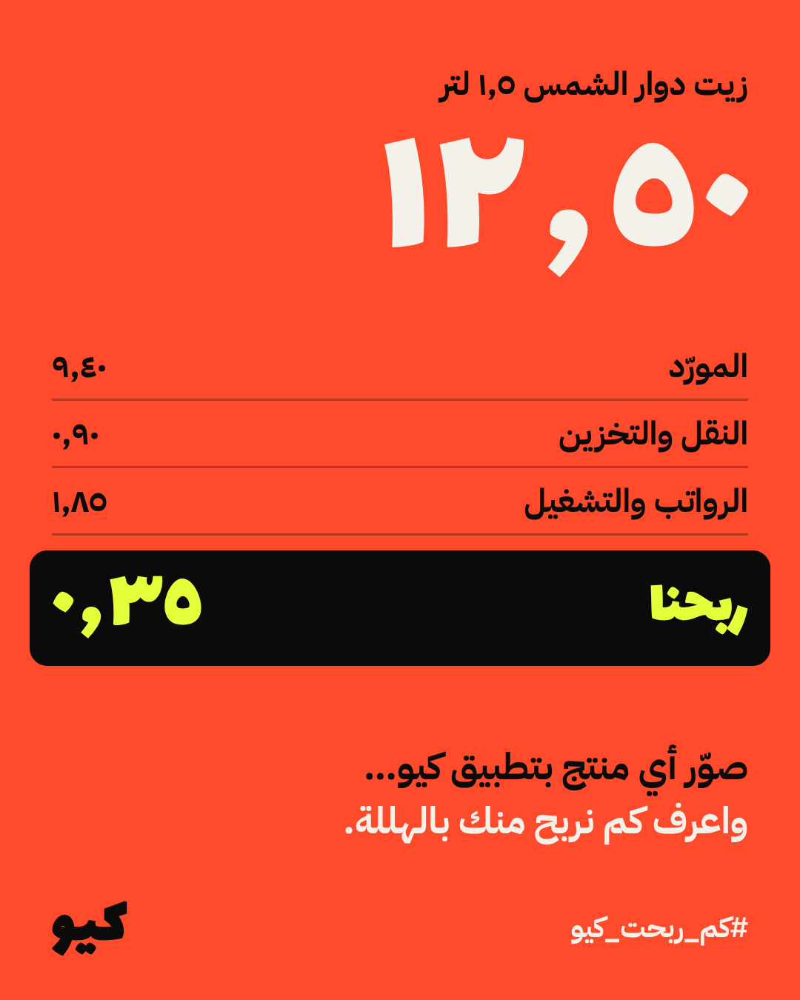

مقترح لدعوة المبدعين · تطبيق كيو
محبوس
في كيو
مؤسس كيو يقفل على نفسه جوه فرع، وما يطلع إلا لما التطبيق يوصل مليون تحميل.
#طلّعوا_محمد
مقترح إبداعي مستقل · غير رسمي · إبراهيم غانم
٠١ · الملاحظة
أقوى وسيلة إعلان عند كيو… مش إعلان.
+٣٠ ألف
فاتورة في اليوم العادي
من كلام محمد عمر في بودكاست بترولي. الناس تحب كيو في الفرع، والسؤال: كم واحد منهم عنده التطبيق؟
محمد عمر
هو القناة
بدأ في بقالة وهو صغير، ١٦ ساعة في اليوم، وسلّموه المفتاح. قصته وحضوره على تيك توك وسناب أقوى من أي إعلان مدفوع.
٢٠٢٧
سباق التطبيقات بدأ
زحمة ومواقف حوالين فرع التحلية في جدة، وبحسب المتداول فيه تطبيق توصيل جديد من لاعب كبير في الربع الأول ٢٠٢٧. اللي يمسك جوال العميل أول، يكسب.
الفرصة: نخلّي التحميلات نفسها هي القصة اللي البلد كلها تتابعها.
المصدر: بودكاست بترولي (مختلف) · الرقم من كلام المؤسس ولم يُدقَّق بشكل مستقل · خبر التطبيق المنافس من البريف ويحتاج تأكيد.
٢
#طلّعوا_محمد
٠٢ · الإلهام
أنجح الحملات خلّت التحميل هو اللعبة.
١٫٥ مليون
Whopper Detour · ٢٠١٨
تحميل في ٩ أيام. حوّلت مطاعم المنافس لكوبون داخل التطبيق. ٣ جوائز Grand Prix في كان ٢٠١٩ منها Titanium.
٢٫٣٨ مليون
HQ Trivia · ٢٠١٨
لاعب في نفس اللحظة (٢٨ مارس ٢٠١٨). لايف داخل التطبيق بس، بموعد ثابت، و«حياة إضافية» بدعوة صاحب. ماتت لأنها بلا دخل، وكيو عندها الدخل.
هدف + عدّاد
بثوث «ما أطلع إلا…»
صنّاع المحتوى حول العالم أثبتوا إن الهدف الواضح والعدّاد الحي والقصة الشخصية يجمعوا ملايين في أيام.
إحنا نجمع التلاتة: صاحب البراند + عدّاد تحميلات + لايف حصري.
المصادر: The One Show / Contagious (Whopper Detour) · Wikipedia / GamesBeat (HQ Trivia).
٣
#طلّعوا_محمد
٠٣ · الفكرة
محمد عمر يقفل على نفسه جوه كيو.
وما يطلع إلا بمليون تحميل.
كاميرا لايف ٢٤ ساعة جوه التطبيق بس. كل تحميلة تقرّبه من الباب، وكل مرحلة تفتح هدية للكل. الناس ما تنزّل التطبيق عشان خصم… تنزّله عشان تطلّع محمد.
«نزّل… وطلّعه.»
٤
٠٤ · الآلية
٤ خطوات بسيطة.
١
القفل والمفتاح
محمد يقفل الفرع على نفسه ويرمي المفتاح في صندوق شفاف ما ينفتح إلا عند الهدف. لحظة تتصوّر وتنتشر.
٢
عدّاد موثّق
عدّاد حي في التطبيق وعلى واجهة الفرع. يُحسب الحساب الجديد الموثّق برقم جوال فقط، فما فيه تلاعب.
٣
مراحل تفتح هدايا
١٠٠ ألف: سرير بدل شوالات الرز · ٢٥٠ ألف: خصم ١٠٪ للكل يوم كامل · ٥٠٠ ألف: محمد كاشير ويوصّل بنفسه · مليون: الباب ينفتح وسلة مجانية لأول ١٠٠٠.
٤
«طلّعه أسرع»
بث حصري داخل التطبيق، وتصويت على مهام محمد اليومية، وكود دعوة: كل صاحب ينزّل بكودك يظهر اسمك على شاشة الفرع.
٥
#طلّعوا_محمد
٠٥ · ليه كيو بالذات؟
لأن القصة أصلًا قصته.
رجوع للبداية
ولد بدأ في بقالة ومعاه مفتاحها… اليوم صاحب كيو يرجع للبقالة، والمفتاح مع جمهوره. قصة حقيقية مش سيناريو.
محتوى ما يخلص
٢٤ ساعة بث = مئات المقاطع لتيك توك وسناب. محمد صانع محتوى أصلًا، والحملة تشتغل بطاقته هو لا بميزانية إعلانات.
تجربة طلب من أول يوم
كل مرحلة هديتها داخل التطبيق (خصم، سلة، توصيل من محمد) فالتحميل يتحوّل لأول طلب، مش تحميلة ومسح.
٦
#طلّعوا_محمد
٠٦ · الستوري بورد · فيلم ٤٨٫٥ ثانية

١ · الهوك: «صاحب كيو… محبوس.»

٢ · فلاش باك: الشتر ينزل والمفتاح في الصندوق

٣ · بدأ في بقالة… والمفتاح معاكم

٤ · العنوان: محبوس في كيو

٥ · البث الحي والإشعار

٦ · العدّاد يكسر المراحل

٧ · المراحل والهدايا

٨ · نزّل… وطلّعه
٧
#طلّعوا_محمد
٠٧ · البوسترات



٨
#طلّعوا_محمد
٠٨ · خطة الإطلاق
من التشويق للخروج الكبير.
٣ أيام
التشويق
محمد على حساباته: «يوم الخميس أدخل الفرع… وما أطلع». صورة المفتاح والصندوق. ما نقول ليش.
حتى ١٤ يوم
الحبس
بث ٢٤ ساعة في التطبيق، مقاطع يومية، تصويت على المهام، وإعلان كل مرحلة لايف.
الناس
محتوى الجمهور
تحدّي «طلّعه أسرع»، صور قدام واجهة الفرع، وشاشة بأسماء اللي جابوا أكثر تحميلات.
الخروج
الختام
عند المليون: الصندوق ينفتح لايف، محمد يطلع وسط الناس، وسلة مجانية لأول ١٠٠٠. لو ما وصلنا في ١٤ يوم: «الجولة الثانية».
٩
#طلّعوا_محمد
٠٩ · القياس والضوابط
نقيس
| التحميلات | حسابات جديدة موثّقة يوميًا مقابل الهدف |
| التحويل | نسبة اللي عملوا أول طلب من التطبيق خلال ٧ أيام |
| الاحتفاظ | نسبة اللي رجعوا للتطبيق بعد ٣٠ يوم |
| التقييم | تقييم التطبيق في المتاجر قبل وبعد |
| المشاهدة | ساعات البث داخل التطبيق والمشاركات |
نضبط
| الصحة | ساعات نوم بلا بث، فريق طبي، ومخرج طوارئ دائم |
| الخصوصية | أماكن خاصة خارج الكاميرا، وموظفو الفرع خارج البث إلا بموافقتهم |
| التلاعب | عدّ الحسابات الموثّقة برقم جوال فقط، وكشف الحسابات الوهمية |
| النظام | تصاريح التخفيضات والمسابقات من الجهات المختصة |
| التكلفة | سقف معلن للهدايا، وسقف زمني ١٤ يوم، والهدف قابل للتعديل |
١٠
#طلّعوا_محمد
١٠ · مين عمل إيه · بشفافية
إبراهيم غانم
صاحب التحدي والاتجاه
قبول التحدي، تحديد الاتجاه، اختيار الفكرة من بين البدائل، المراجعة والاعتماد النهائي لكل الأعمال.
Claude
مساعد ذكاء اصطناعي من Anthropic
البحث، اقتراح وتطوير الأفكار، كتابة النصوص، برمجة الفيلم والصوت والبوسترات وهذا الملف بالكود بالكامل، بدون أي أدوات توليد مدفوعة.
مقترح إبداعي مستقل وغير رسمي. لا يمثل كيو ولا محمد عمر، ولم يُنفّذ أي جزء منه بموافقتهما بعد. صورة محمد عمر مستخدمة لأغراض العرض فقط.
كيو. نزّل… وطلّعه.
١١